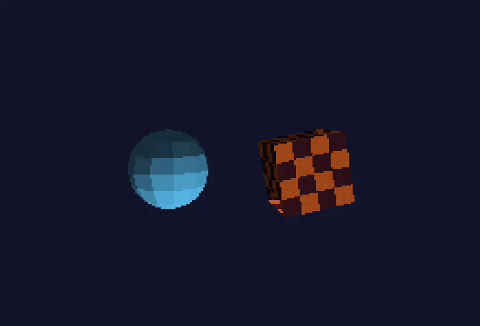

01
Retro by design
Render to a low-resolution RGB5 target, snap geometry to pixels, then upscale with nearest-neighbor filtering. The look is part of the renderer.
320 × 240 / RGB5 / DITHERA tiny, hands-on C++ game engine core for crunchy pixels, bitmap text, simple UI, affine textures, and worlds that feel like they came from another era.

No editor to learn. No scene graph to fight. Just a small C++ API that gets out of your way and makes every pixel count.
Render to a low-resolution RGB5 target, snap geometry to pixels, then upscale with nearest-neighbor filtering. The look is part of the renderer.
320 × 240 / RGB5 / DITHERGenerate cubes and spheres, load OBJ meshes, set up a camera, and draw textured models with a few calls.
MESH / CAMERA / OBJStart with pxl1.h for the easy game-style API. Reach for the lower-level window, renderer, and texture types when you want control.
SDL2 opens the window, OpenGL 3.3 draws the scene, and consecutive triangles sharing a texture are streamed together as a batch.
SDL2 + GLEW + OPENGLGeometry in. Pixels out.
Keep the happy accidents.
PXL/1 uses SDL2 for windows and input, SDL2_image for loading textures, GLEW to load OpenGL, and OpenGL 3.3 for rendering.
In an MSYS2 UCRT64 terminal, install the compiler and libraries.
CMake configures the g++ build and compiles the library and examples.
Launch the 3D demo or game and start experimenting.
# Install compiler, CMake, and graphics dependencies
$ pacman -S mingw-w64-ucrt-x86_64-gcc mingw-w64-ucrt-x86_64-cmake \
mingw-w64-ucrt-x86_64-pkgconf mingw-w64-ucrt-x86_64-SDL2 \
mingw-w64-ucrt-x86_64-SDL2_image mingw-w64-ucrt-x86_64-glew
# Configure, build, and test with g++
$ cmake -S . -B build-gcc -G "MinGW Makefiles" \
-DCMAKE_CXX_COMPILER=g++
$ cmake --build build-gcc
$ ctest --test-dir build-gcc --output-on-failure
# Run a demo
$ ./build-gcc/pxl1_3d_demo.exeSingle header: pxl1.h contains the PXL/1 API and backend. Define PXL1_IMPLEMENTATION in one source file. SDL2, SDL2_image, GLEW, and OpenGL are still external dependencies that must be installed and linked.
Use the convenience API to get moving, or work directly with the renderer. These examples match the current PXL/1 interface.
The simple helpers live in the pxl1 namespace. Include pxl1.h and compile its implementation once.
InitWindow(w, h, title)Open an SDL2 window and OpenGL contextInitWindow(960, 720, "Game")BeginDrawing(color)Start a frame and clear its backgroundBeginDrawing(colors::black)EndDrawing()Present the frame; applies the target FPS capEndDrawing()IsKeyDown(key)Check whether a key is heldIsKeyDown(Key::space)GetMousePosition()Get pointer position in low-resolution render coordinatesconst auto mouse = GetMousePosition()GetMouseDelta()Read this frame's relative mouse movement in window pixelsconst auto delta = GetMouseDelta()DisableCursor / EnableCursorCapture and hide the cursor, then release and show itDisableCursor()UpdateCameraFromMouse(camera)Apply relative mouse motion as first-person lookUpdateCameraFromMouse(camera)UpdateOrbitCameraFromMouse(camera)Orbit a camera around its target using mouse motionUpdateOrbitCameraFromMouse(camera)IsMouseButtonPressed(button)Check for a click during this frameIsMouseButtonPressed(MouseButton::left)DrawRectangle(...)Draw a filled low-resolution rectangleDrawRectangle(8, 8, 32, 16, color)DrawText(text, x, y, size, color)Draw crisp embedded bitmap textDrawText("SCORE", 8, 8, 10, color)DrawTextEx / DrawTextRecDraw spaced or word-wrapped textDrawTextEx("PXL/1", pos, 8, 1, color)MeasureText / MeasureTextExMeasure text before placing UIMeasureText("START", 8)GuiButton(bounds, text)Draw a button and report a clickif (GuiButton(rect, "PLAY")) { ... }GuiCheckBox / GuiSliderDraw and interact with common controlsvolume = GuiSlider(rect, volume, 0, 1)GuiProgressBar / GuiPanelDraw status bars and UI panelsGuiProgressBar(rect, hp, 0, maxHp)DrawCircleLines(...)Draw a custom circle outlineDrawCircleLines(40, 40, 12, color)DrawPoly(points, count, color)Fill a custom convex polygonDrawPoly(points, 5, color)DrawPolyLines(points, count, color)Outline a custom polygonDrawPolyLines(points, 5, color)DrawTexture(texture, x, y)Draw a loaded texture as a 2D imageDrawTexture(texture, 8, 8)DrawCube(pos, size, texture)Draw a UV-mapped 3D cube with depth testingDrawCube(pos, size, texture)SetCamera(camera)Set the perspective camera for 3D drawingSetCamera(camera)LoadModel(path)Load an OBJ mesh and UV coordinatesLoadModel("ship.obj")DrawModel(model, ...)Draw an OBJ mesh, optionally texturedDrawModel(ship, pos, 1, texture)LoadImage(path)Load CPU-side image pixelsauto image = LoadImage("ship.png")LoadTextureFromImage(image)Upload image pixels to the GPUauto tex = LoadTextureFromImage(image)UnloadImage / UnloadModelRelease CPU-side image or mesh storageUnloadImage(image)UnloadTexture / UnloadAllRelease GPU textures; CloseWindow does so automaticallyUnloadAll()3D uses a 24-bit depth buffer and clips against camera near/far planes. Call DisableCursor() and UpdateCameraFromMouse(camera) after event polling for first-person mouse look; use UpdateOrbitCameraFromMouse for third-person orbit. 2D helper draws stay layered on top.